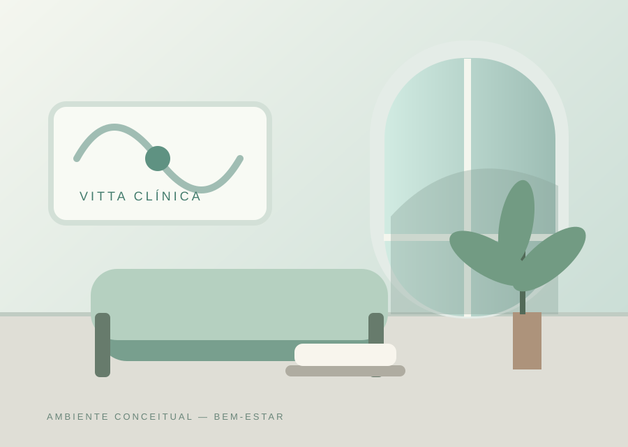

Cardiologia
Avaliação e acompanhamento da saúde cardiovascular.
A Vitta Clínica reúne diferentes especialidades de saúde em um só espaço, com atendimento acolhedor e estrutura pensada para o seu bem-estar.

VITTA / AMBIENTE CONCEITUALAvaliação e acompanhamento da saúde cardiovascular.
Consultas de rotina e acompanhamento contínuo.
Planos alimentares personalizados.
Exames e cuidados com a saúde ocular.
Uma apresentação que organiza avaliações, orientações de atendimento e informações sobre consultas.
Conhecer jornada de atendimento ↗Perfis ilustrativos criados para demonstrar uma possível estrutura de apresentação.
Equipe conceitual
Equipe conceitual
Equipe conceitual
Equipe conceitual
Experimente como um site poderia ajudar visitantes a organizar preferências para uma consulta. Esta demonstração não verifica horários e não coleta nem envia informações.
Rua das Acácias, 210 — Jardim Europa
De segunda a sexta-feira, das 8h às 19h
Número de exemplo: (69) 9 7766-5544
Este é um projeto autoral desenvolvido pela USBRIN para inspirar diferentes possibilidades de apresentação para empresas.
Quero um site assim para o meu negócio